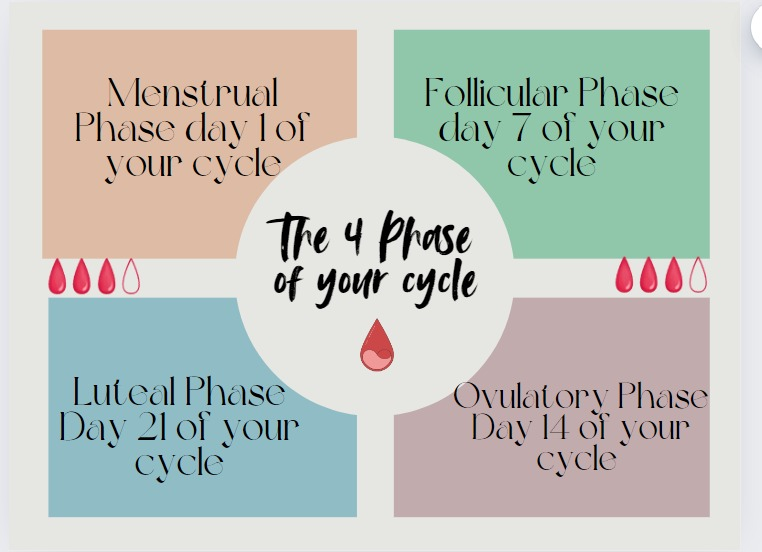

Menstrual Cycle
The menstrual cycle is a natural cycle of changes that a woman's body goes through each month to prepare for pregnancy. It is counted from the first day of her period to the day before her next period. The average length of a menstrual cycle is 28 days, but it can vary from 23 to 35 days. For example, teenage girls may have cycles that last 45 days, while those in their 20s and 30s may have cycles that last 21 to 38 days. Cycles can also change as women age.
During the menstrual cycle, the body produces various hormones to prepare for pregnancy. These hormonal changes can cause menstrual symptoms. For example, if pregnancy does not occur, the corpus luteum stops producing progesterone, causing the uterine lining to shed and bleed. This bleeding is called menstruation or menstruation. It can last from 2 to 7 days, but usually lasts about 5 days. Bleeding is usually heaviest during the first two days and can vary in colour from red to pink or brown. The average amount of blood lost during a period is 30 ml, but can range from light bleeding to 80 ml. If it is more than 80 ml is considered abnormal.
Diet
Your period doesn’t have to be a dreaded monthly ordeal. By taking a conscious approach to your diet, you can significantly reduce discomfort and improve your overall health. The foods mentioned in this blog offer a holistic solution to common period-related problems, from cramps to mood swings. So the next time your period knocks on your door, stock up on period-friendly foods and enjoy a happier, healthier menstrual experience. Remember that your body is your ally and with good nutrition, you can overcome these monthly challenges and emerge stronger and more resilient.
Autism Menstrual cycle
The experience of the menstrual cycle in individuals with autism can differ significantly from that of neurotypical individuals, largely due to sensory sensitivities, communication challenges, and difficulties with emotional regulation. While the biological process remains the same, the way menstruation is perceived and managed can vary.

Sensory Sensitivities:
Heightened Sensitivity: People with autism often experience heightened sensory sensitivity, which can make the physical sensations of menstruation, such as cramps or wearing sanitary products, more uncomfortable.
Resistance to Change: The changes in bodily sensations and routines associated with menstruation can be unsettling, potentially causing anxiety.
Communication and Comprehension:
● Understanding the Process: Individuals with autism may find it challenging to understand the concept of menstruation, which can lead to confusion or fear when they begin experiencing it.
● Expressing Discomfort: Communication difficulties may make it harder for these individuals to articulate their discomfort or pain, leading to increased frustration.
Emotional Regulation:
● Emotional Responses: Hormonal changes during the menstrual cycle can impact mood and emotional regulation, which may be more intense for individuals on the autism spectrum.
● Anxiety and Stress: The unpredictability of menstruation can be particularly anxiety-inducing for those who thrive on routine and predictability.
Support Strategies:
● Education and Preparation: Providing clear, accessible information about menstruation can help individuals with autism understand and cope with the changes they will experience.
● Routine Development: Establishing a consistent menstrual care routine can help reduce anxiety.
● Exploring Comfort Options: Trying different menstrual products to find what is most comfortable can be beneficial, whether it's menstrual cups, period underwear, or specific pads.
● Emotional Reassurance: Offering additional emotional support during menstruation can help manage distress.
Healthcare Considerations:
● Professional Guidance: Regular consultations with healthcare providers who understand both autism and menstrual health can help address the specific needs of the individual.